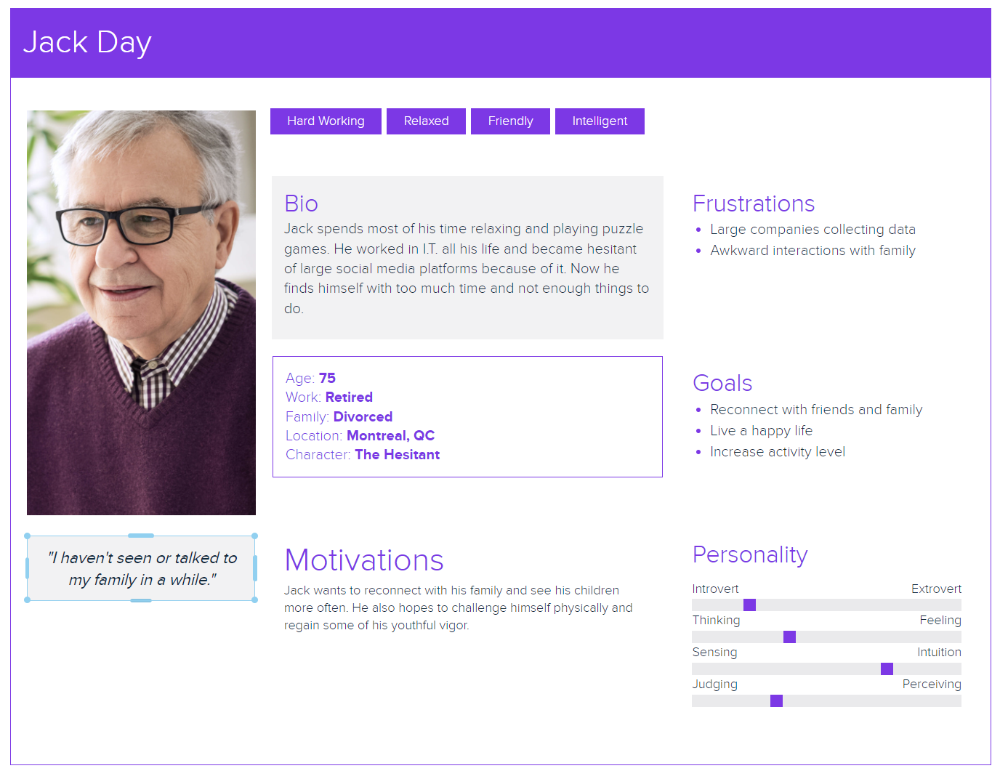
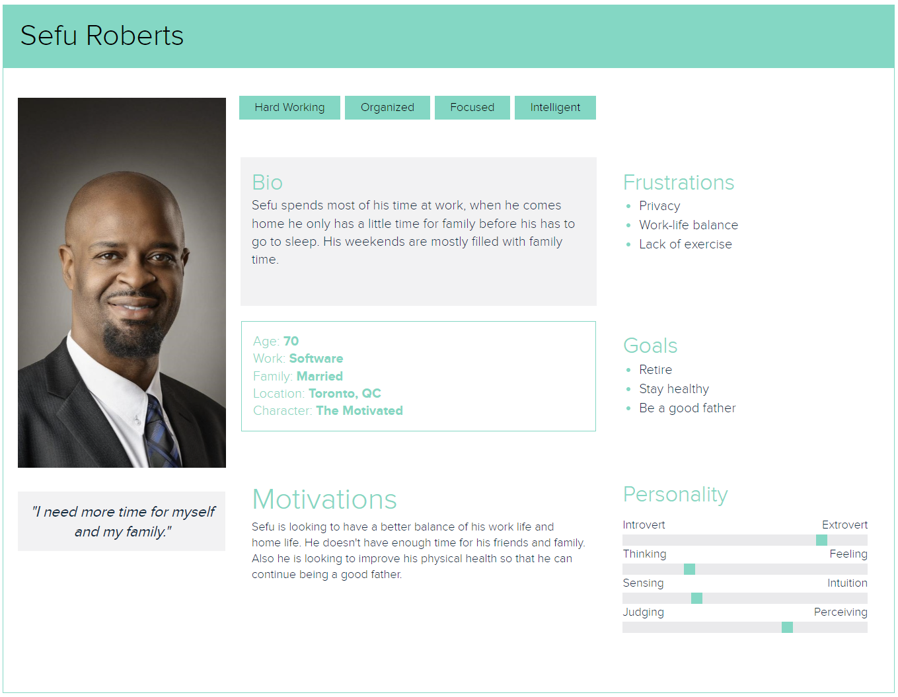
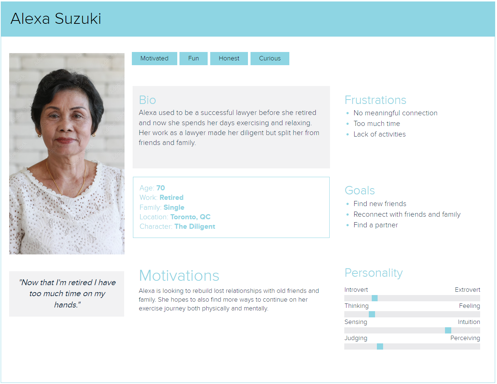
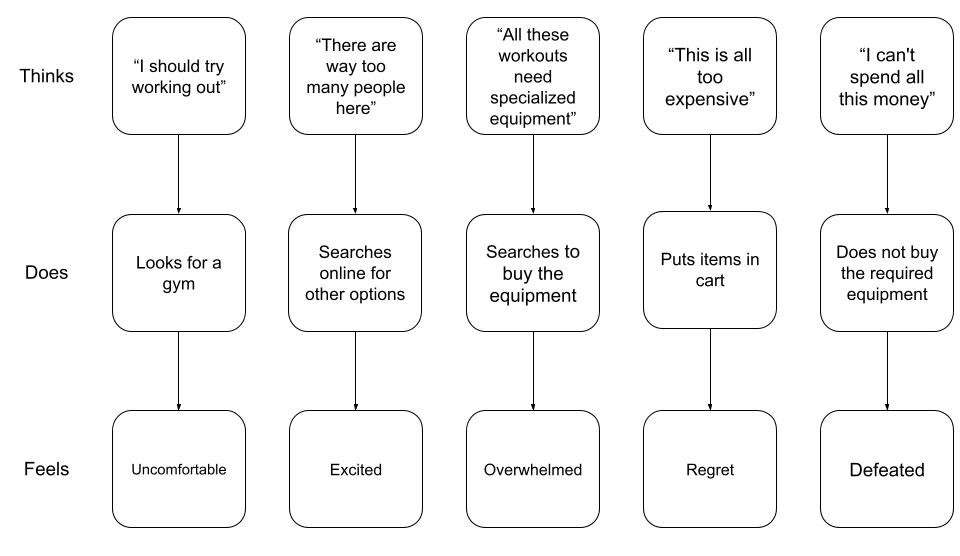
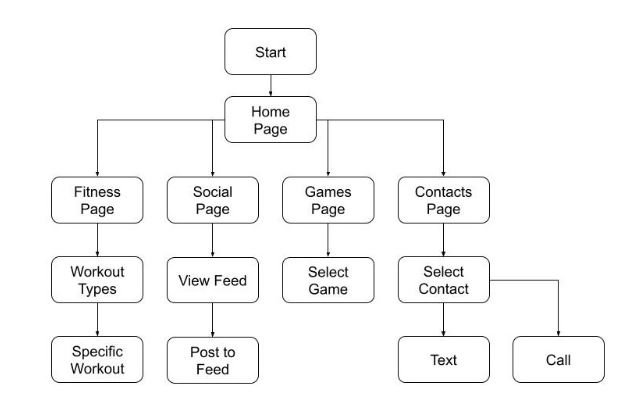
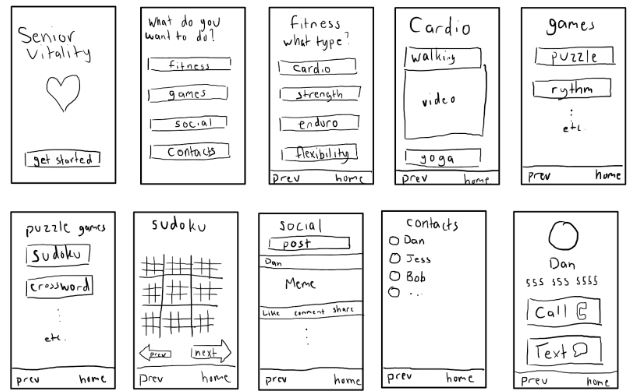
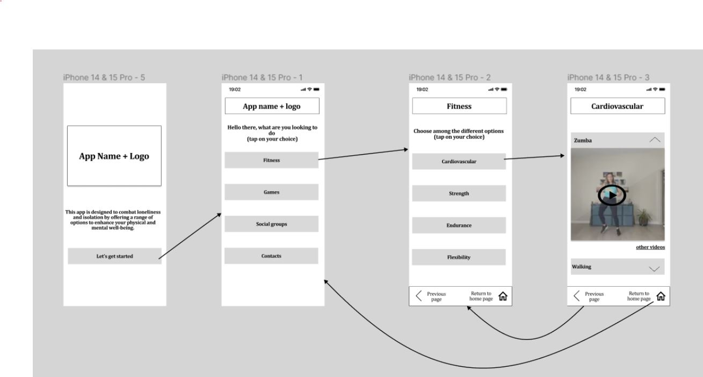
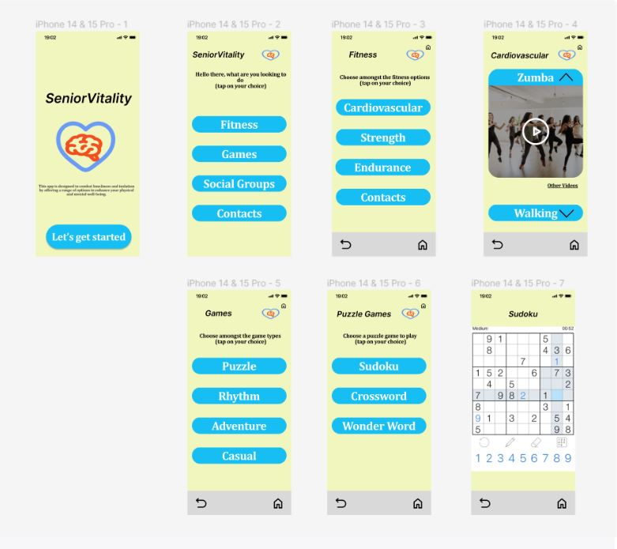

I n the wake of the COVID-19 pandemic, the elderly population faced a sense of isolation and a disruption to their usual access to healthcare, social interaction, and activities. The elderly have found themselves cut off from the vital connections that sustain their physical and mental well-being. The need for a solution that addresses their unique needs, including technological adaptability and accessibility, becomes increasingly urgent. In this design project, we aim to tackle these issues by creating an application that can not only combat loneliness but also offers valuable resources to enhance the quality of life for elderly users.
Creating a user-friendly application for widespread use poses a challenge for UX designers. In order to accurately capture public sentiment, we used strategies that maximize outreach and intimacy. Consequently, we've opted for distributing surveys and conducting interviews as our chosen methods.
We created easy and quick to complete surveys that could be efficiently distributed to our target population through both paper questionnaires and google forms. This allowed our respondents the easiest choice for their level of technological literacy. We were also able to ask some respondents to explain their answers for a deeper understanding of their thoughts. Analyzing the data received from the surveys we were able to determine the following...
Using the data we obtained, we were able to generate some users that would represent our surveyed demographic. The following personas have minimal range in terms of age, but vary greatly in gender, ethnicity, career and personalities...
Jack spent almost his whole life in I.T. which made him very tech savvy. He was married but because of work became divorced, now he is looking to rekindle his lost relationship with his family. He also knows that if he wants to live a long and happy life he will have to work on both his mind and his body.
Sefu currently works in software and his job is taking away his personal life. He wants to be able to spend more time and be more connected with his family wherever he is. Since he already knows that his mind is being challenged everyday he is looking for more ways to incorporate physical activity in his lifestyle.
Alexa is a motivated and hard worker who recently retired after spending her life being a lawyer. She never got married and is now looking for a partner late in life. Her family and friends slowly drifted away from her while she spent her days working and now she is also looking to talk to them again.
The thought process of a typical senior looking to start working out might look something like this. Our app aims to show simple and easy workouts that don't require specialized equipment so that users can easily begin their workout journey.
We decided to name the application SeniorVitality. The reason for this is because the app is intended for an elders' experience, hence "senior". The vitality means the state of strength, our intent is to help build older folks mental and physical strength, hence enhancing their "vitality".
In our application, every individual has a fitness, social, games and contacts page. We made the task of accessing apps more simplistic for our older customers, all can be done in one application; "SeniorVitality".
The user flow diagram was created as a way to map out the main pages and functionalities of our app before we started working on sketches and more detailed wireframe designs.
The user flow diagram was used to create a sketch of the layout of the app on a phone screen. This sketch was then used to create a wireframe that was more detailed and precise.
Wireframes are an essential element in the process of designing websites, applications, and other digital interfaces. They serve as a fundamental blueprint, providing a visual representation of a user interface's layout and structure, without getting into the finer details of colors, fonts, or images.
Following the completion of the wireframes, we are ready to proceed with creating the mockup. Our primary focus remains on enhancing the user experience for older individuals, prioritizing key design principles such as consistency and minimizing unexpected elements. Additionally, we maintain a straightforward and uncomplicated structure to prevent user confusion or overwhelm. This marks the final step before we present the ultimate prototype.
The final stage in the process of designing our mobile application is to create the prototype. Prototypes add an interaction to static mockups, which allows stakeholders and users to experience the interface’s functionality, even if limited to certain functionalities. When developing an application, the prototype allows us to test the UX and gather feedback to refine the design and ensure that the final product meets the expectations of the user.
Elderly users encounter several usability challenges when interacting with mobile applications. These challenges can be categorized into three main areas: visual, psychomotor, and cognitive issues...
Visual Challenges:
-Elderly users often struggle with small or unclear elements like characters, icons, images, and font size on mobile screens. Touch targets may not be large enough, making it difficult to interact with the interface effectively.
-Inappropriate color choices and low-contrast combinations further hinder their ability to discern and navigate elements.
-The recommendations to address these challenges include using larger text size, simple clear fonts, and providing contrasting color options.
Psychomotor Challenges:
-They also face issues related to interacting with moving elements, requiring fast and repetitive movements, and complicated navigation steps. The use of scrollbars is problematic, and identifying tappable areas can be challenging.
-Recommendations involve reducing the number of interactions, using simple menu structures, and favoring traditional button pressing methods over complex gestures.
Cognitive Challenges:
-Elderly users struggle with complex text, deep menu hierarchies, non-standardized menus, and ambiguous graphics or icons.
-Confusing terminology, unfamiliar terms, and the absence of clear instructions make it harder for them to understand and navigate through the interface.
-To mitigate cognitive challenges, it is suggested to simplify menu structures, use easily recognizable icons, provide textual support for icons, and avoid animations. Additionally, clear instructions and intuitive navigation should be incorporated to enhance user experience.
(Lesly Elguera Paez & Del, 2019)
Elderly Users and Their Main Challenges Usability with Mobile Applications: A Systematic Review
Lecture Notes in Computer Science, 423–438.
Loneliness and social isolation during the COVID-19 pandemic
International Psychogeriatrics, 32(10), 1217–1220.